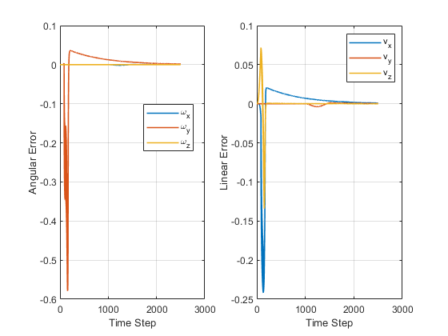
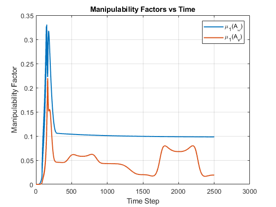

Full Program / Wrapper Script
Test Script for Full Program / Wrapper Script (Component 4) Mobile Manipulation Capstone – Full Pick-and-Place Simulation
This script combines the TrajectoryGenerator, FeedbackControl, and NextState functions to simulate the full mobile manipulation task. The program generates a reference trajectory, computes the control inputs required to follow the trajectory, updates the robot state over time, stores the resulting robot configurations, and plots both the end-effector error and manipulability factors.
Written by Brandon Lopez UCSD Mechatronics & Controls Master's Program brandon.lopez.miramontes@gmail.com
close all; clear; clc; % Controller gains and timestep Kp = 15 * eye(6); %10 Ki = 2* eye(6); %2 lambda = 0.01; dt = 0.01; maxJointVel = 20; % Cube configurations x_init = 1.0; y_init = 0.0; z_init = 0.025; phi_init = 0; x_final = 0; y_final = -1.0; z_final = 0.025; phi_final = -pi/2; T_sc_init = [cos(phi_init) -sin(phi_init) 0 x_init; sin(phi_init) cos(phi_init) 0 y_init; 0 0 1 z_init; 0 0 0 1]; T_sc_final = [cos(phi_final) -sin(phi_final) 0 x_final; sin(phi_final) cos(phi_final) 0 y_final; 0 0 1 z_final; 0 0 0 1]; % Grasp and standoff configurations T_ce_grasp = [-sqrt(2)/2 0 sqrt(2)/2 0; 0 1 0 0; -sqrt(2)/2 0 -sqrt(2)/2 0; 0 0 0 1]; T_ce_standoff = [-sqrt(2)/2 0 sqrt(2)/2 0; 0 1 0 0; -sqrt(2)/2 0 -sqrt(2)/2 0.10; 0 0 0 1]; % youBot constants l = 0.47 / 2; w = 0.3 / 2; r = 0.0475; T_b0 = [1 0 0 0.1662; 0 1 0 0; 0 0 1 0.0026; 0 0 0 1]; M_0e = [1 0 0 0.033; 0 1 0 0; 0 0 1 0.6546; 0 0 0 1]; Blist = [0 0 1 0 0.033 0; 0 -1 0 -0.5076 0 0; 0 -1 0 -0.3526 0 0; 0 -1 0 -0.2176 0 0; 0 0 1 0 0 0]'; F = (r/4) * [ -1/(l+w), 1/(l+w), 1/(l+w), -1/(l+w); 1, 1, 1, 1; -1, 1, -1, 1 ]; F6 = [0 0 0 0; 0 0 0 0; F(1,:); F(2,:); F(3,:); 0 0 0 0]; % Initial actual robot state % [phi; x; y; arm1; arm2; arm3; arm4; arm5; wheel1; wheel2; wheel3; wheel4] currentState = zeros(12,1); % Or, if you want the offset test case, use: %currentState = [0; 0; 0; 0; 0; 0.2; -1.6; 0; 0; 0; 0; 0]; % Compute actual initial end-effector configuration from currentState phi = currentState(1); x = currentState(2); y = currentState(3); theta = currentState(4:8); T_sb = [cos(phi) -sin(phi) 0 x; sin(phi) cos(phi) 0 y; 0 0 1 0.0963; 0 0 0 1]; T_0e = FKinBody(M_0e, Blist, theta); T_se_init = T_sb * T_b0 * T_0e; % Generate reference trajectory from actual initial pose trajOutput = TrajectoryGenerator(T_se_init, T_sc_init, T_sc_final, ... T_ce_grasp, T_ce_standoff); writematrix(trajOutput, 'overtrajectoryOutput.csv'); % Storage Ntraj = size(trajOutput, 1); allStates = zeros(Ntraj, 13); allErrors = zeros(Ntraj - 1, 6); % Storage for manipulability factors mu_w = zeros(Ntraj-1,1); mu_v = zeros(Ntraj-1,1); allStates(1,:) = [currentState' trajOutput(1,13)]; Verr_accu = zeros(6,1); % Main simulation loop for i = 1:Ntraj-1 phi = currentState(1); x = currentState(2); y = currentState(3); theta = currentState(4:8); T_sb = [cos(phi) -sin(phi) 0 x; sin(phi) cos(phi) 0 y; 0 0 1 0.0963; 0 0 0 1]; T_0e = FKinBody(M_0e, Blist, theta); T_se = T_sb * T_b0 * T_0e; T_se_d = row2T(trajOutput(i,:)); T_se_d_next = row2T(trajOutput(i+1,:)); [Vb, Verr_accu, Verr] = FeedbackControl(T_se, T_se_d, T_se_d_next, ... Kp, Ki, dt, Verr_accu); Jarm = JacobianBody(Blist, theta); T_eb = TransInv(T_0e) * TransInv(T_b0); Jbase = Adjoint(T_eb) * F6; Je = [Jbase Jarm]; % Split Jacobian into angular and linear parts Jw = Je(1:3,:); Jv = Je(4:6,:); % Manipulability matrices Aw = Jw * Jw'; Av = Jv * Jv'; % Manipulability factors mu_w(i) = manipulability_factor(Aw); mu_v(i) = manipulability_factor(Av); %lambda = 0.01; controls = Je' * ((Je * Je' + lambda^2 * eye(6)) \ Vb); %controls = pinv(Je) * Vb; % Reorder for NextState: [armSpeeds; wheelSpeeds] jointVel = [controls(5:9); controls(1:4)]; currentState = NextState(currentState, jointVel, dt, maxJointVel); allStates(i+1,:) = [currentState' trajOutput(i+1,13)]; allErrors(i,:) = Verr'; end writematrix(allStates, 'overallstatesOutput.csv'); % Plot Xerr figure; subplot(1,2,1) plot(allErrors(:,1:3), 'LineWidth', 1.2) xlabel('Time Step') ylabel('Angular Error') legend('\omega_x', '\omega_y', '\omega_z',Location='best') grid on subplot(1,2,2) plot(allErrors(:,4:6), 'LineWidth', 1.2) xlabel('Time Step') ylabel('Linear Error') legend('v_x', 'v_y', 'v_z') grid on % Plot manipulability factors versus time figure; plot(mu_w, 'LineWidth', 1.5); hold on; plot(mu_v, 'LineWidth', 1.5); xlabel('Time Step'); ylabel('Manipulability Factor'); legend('\mu_1(A_\omega)', '\mu_1(A_v)'); title('Manipulability Factors vs Time'); grid on; function mu = manipulability_factor(A) % manipulability_factor % Computes a scalar manipulability factor from A = J*J'. % This uses the isotropy-style ratio min/max of the ellipsoid eigenvalues. A = (A + A') / 2; % numerical symmetry eigvals = eig(A); eigvals = real(eigvals); eigvals = max(eigvals, 1e-12); mu = min(eigvals) / max(eigvals); end function plot_manipulability_ellipsoids(Aw, Av, stepnum) % Plot angular and linear manipulability ellipsoids at one timestep [V_Aw, D_Aw] = eig(Aw); l_Aw = [sqrt(D_Aw(1,1)), sqrt(D_Aw(2,2)), sqrt(D_Aw(3,3))]; [V_Av, D_Av] = eig(Av); l_Av = [sqrt(D_Av(1,1)), sqrt(D_Av(2,2)), sqrt(D_Av(3,3))]; ellipsoid_plot(l_Aw, V_Aw, sprintf('Angular manipulability ellipsoid at step %d', stepnum)); ellipsoid_plot(l_Av, V_Av, sprintf('Linear manipulability ellipsoid at step %d', stepnum)); end function ellipsoid_plot(l_A, v_A, titl) % Reused/adapted from your PDF helper % l_A: [a b c] semi-axis lengths % v_A: 3x3 principal directions % titl: plot title [X,Y,Z] = ellipsoid(0,0,0,l_A(1),l_A(2),l_A(3)); for i = 1:21 for j = 1:21 A = v_A * [X(i,j); Y(i,j); Z(i,j)]; X(i,j) = A(1); Y(i,j) = A(2); Z(i,j) = A(3); end end figure plot3([0 1.25*max(l_A)*v_A(1,1)], [0 1.25*max(l_A)*v_A(2,1)], [0 1.25*max(l_A)*v_A(3,1)], 'r', 'LineWidth', 2) hold on plot3([0 1.25*max(l_A)*v_A(1,2)], [0 1.25*max(l_A)*v_A(2,2)], [0 1.25*max(l_A)*v_A(3,2)], 'b', 'LineWidth', 2) plot3([0 1.25*max(l_A)*v_A(1,3)], [0 1.25*max(l_A)*v_A(2,3)], [0 1.25*max(l_A)*v_A(3,3)], 'g', 'LineWidth', 2) plot3([0 1.5*max(l_A)], [0 0], [0 0], 'r') plot3([0 0], [0 1.5*max(l_A)], [0 0], 'b') plot3([0 0], [0 0], [0 1.5*max(l_A)], 'g') s = surf(X,Y,Z); s.EdgeColor = 'none'; s.FaceColor = [0.5 0.5 0.5]; s.FaceAlpha = 1; grid on axis equal xlabel('X-direction') ylabel('Y-direction') zlabel('Z-direction') legend('x-axis','y-axis','z-axis') title(titl) end function T = row2T(T_V) T = [T_V(1) T_V(2) T_V(3) T_V(10); T_V(4) T_V(5) T_V(6) T_V(11); T_V(7) T_V(8) T_V(9) T_V(12); 0 0 0 1]; end

